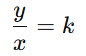
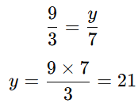

¿Qué es?
Dos magnitudes son directamente proporcionales cuando al aumentar una, la otra también aumenta en la misma razón.
Esto significa que la relación entre las dos siempre se mantiene constante.
Fórmula general:
 - Donde k es la constante de proporcionalidad.
Por lo tanto, si conocemos una relación, podemos encontrar cualquier otra multiplicando o dividiendo con la misma razón.
EJEMPLO:
Si1cuaderno cuesta S/3, entonces 4cuadernos costarán S/12.
👉 Al duplicar la cantidad, se duplica el costo.
Ejemplo resuelto:
Si 3 kg de manzanas cuestan S/9, ¿cuánto costarán 7 kg?

✅ Respuesta: S/21
💡 Conclusión: Si una magnitud aumenta, la otra también lo hace en igual proporción.